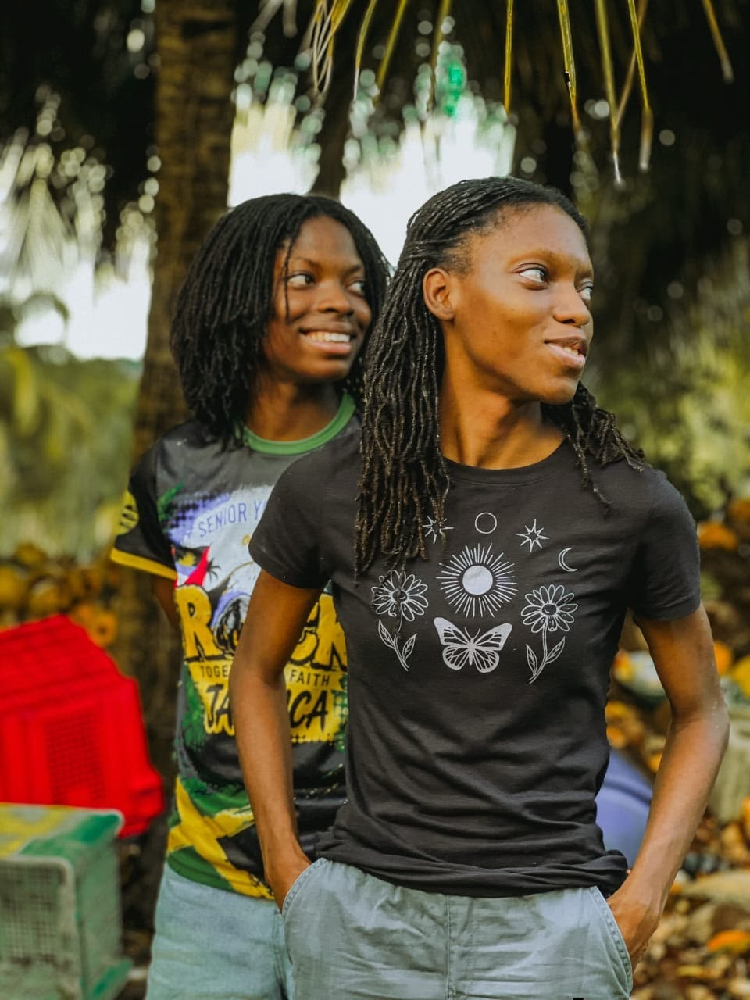
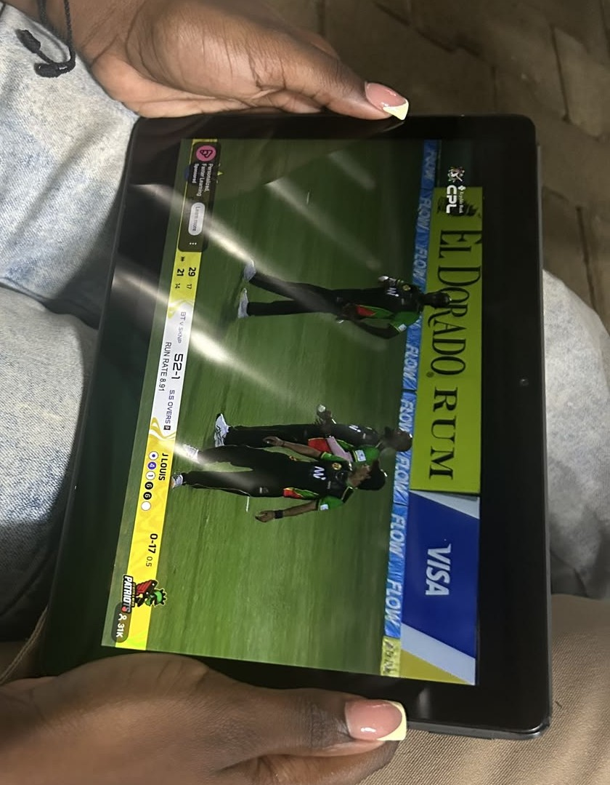

RickP's Green Acres

RickP's Green Acres is a small, family‑owned farm that specializes in organic produce and sustainable farming practices. For generations, our family has worked this land with care, learning how to grow healthy crops while protecting the soil and the environment around us. We take pride in producing fresh fruits and vegetables that are completely free from harmful chemicals and pesticides, ensuring that every item we harvest is safe, nutritious, and full of natural flavor. Our farm is deeply committed to supporting our community by offering healthy, locally‑sourced food and by promoting environmental stewardship through responsible farming methods.
Throughout the growing season, we offer a wide variety of fresh produce, from crisp leafy greens to vibrant seasonal fruits. We enjoy sharing our knowledge with visitors and customers, and we are always happy to answer any questions you may have about how we grow our crops, the sustainable techniques we use, or the products we offer. At RickP’s Green Acres, we believe that good food starts with good farming, and we are proud to bring that dedication straight from our fields to your table.
CPL 2026

The Falcons' journey to the top was marked by determination, skill, and teamwork, and every game showed how committed they were to improving and supporting one another. Their performance throughout the league was impressive, with standout plays, smart strategies, and moments of pure grit that kept supporters on the edge of their seats. They truly deserved the championship, not only because of their talent but because of the heart they put into every match. I am proud to be a fan of such a talented team and look forward to supporting them in future seasons as they continue to grow, inspire young athletes, and represent Antigua and Barbuda with strength and passion.The Falcons' journey to the top was marked by determination, skill, and teamwork, and every game showed how committed they were to improving and supporting one another.
Throughout the season, they faced tough opponents, unpredictable weather, and moments where the pressure was sky‑high, yet they continued to rise to the challenge with confidence and discipline. Their performance across the league was consistently impressive, with standout plays that shifted momentum, smart strategies that outwitted their rivals, and moments of pure grit that kept supporters on the edge of their seats. Each match felt like a story of resilience, and fans could see how much effort and preparation went into every decision on the field. They truly deserved the championship, not only because of their talent, but because of the heart, unity, and passion they brought into every match. As an Antiguan supporter, I am incredibly proud to cheer for such a talented team, and I look forward to supporting them in future seasons as they continue to grow, inspire young athletes, and represent Antigua and Barbuda with strength, pride, and unwavering determination.